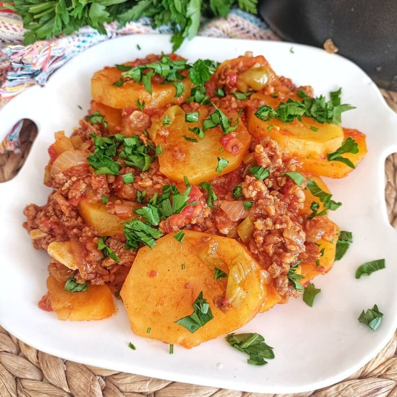

Mama's Potato Stew

A hearty, loving dish from Mediterranean Region of Turkey. This dish could be eaten by itself as well but I prefer cooking it with rice.
It can be made vegan as well if you use vegan minced meat
DISCLAIMER: This dish includes a very Turkish ingredient called Salcha. You can probably find it in Middle-Eastern or Turkish stores.
Now let's check the ingredients out:
- Potatoes
- 2 onions
- Some green peppers
- 500g of minced meat or vegan minced meat
- Vegatable oil
- Salcha
- 4 big tomatoes or some canned tomatoes
- Salt
- Black pepper
- Cumin
And how to do we cook this bad boy?
- Peel the potatoes and slice them in cubes
- Dice the onion and pepper into small pieces
- Add the vegatable oil into the pot and heat up
- Add the minced meat and fry them until they're nicely brown
- Add cumin and black pepper
- Add onions and fry them as well until they change color
- Add tomato ans salca, mix them of for 3 minutes
- Now add the peppers and mix it for 2 more minutes
- Add the potatoes
- Add some water only until it's above the potatoes on top
- Let it boil until the potatoes are nicely cooked
- Add salt to taste
Enjoy!